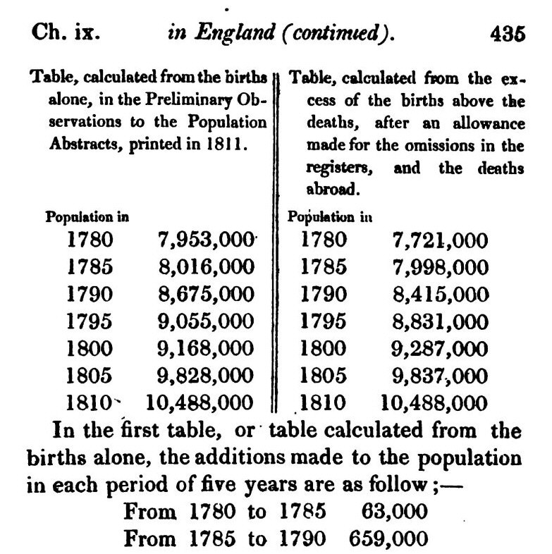
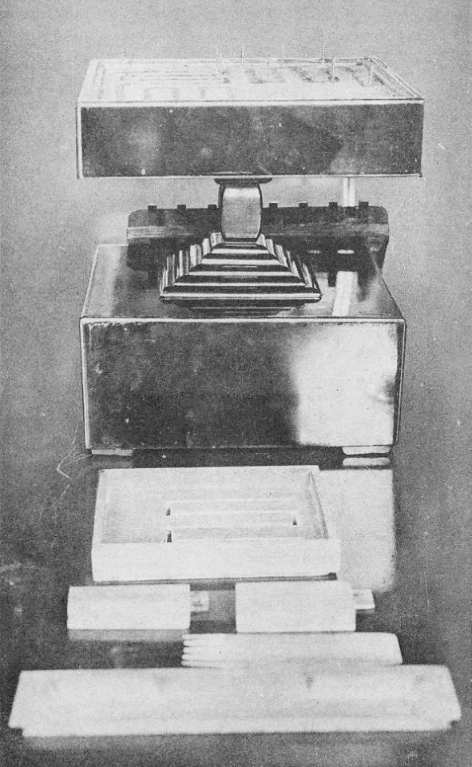

第28回
流れていたものが冷えて固まった跡が、洞窟の床にしわを残している。
さかおり（2020年、駒門風穴の縄状溶岩）／CC BY-SA 4.0／Wikimedia Commons（横長に切り出した）
第7回では「関数から変化率（導関数）を求める」ことを、第10回では「変化率から元の関数を戻す」ことを学んだ。ただし戻せたのは、変化率が x だけで書けているとき（$y'=2x$ など）だけである。現実の法則は「温度の下がる速さは、いまの温度に依存する」のように、変化率が求めたい関数そのものを含む形で書かれる。それが微分方程式である。この回では、微分方程式とは何か、「解」とは何か（代入して確かめる）、方向場で解の形を読むこと、そして1階の2つの解き方（変数分離と積分因子）を、途中を省かずに導く。
第1回から続く約束どおり、新しい記号は緑色の枠（記号）で「①読み方 ②日本語での意味 ③省略していない書き方 ④どこで出会うか」を書く。この回で最も気をつけたいのは、「解」が数ではなく関数だという点と、$\dfrac{dy}{dx}$ を分数のように扱う操作（$dy=\ldots dx$）が、実は何の省略かという点である。後者は 3.2 で一度、完全な形で書き下す。
各節は、「なぜ必要か → 定義 → 数値で一度手を動かす → 導出 → 確かめ → よくある誤解」の順に進む。高校・1年で習った内容も短く一度は書く。覚えている部分は飛ばしてよい。
最初に、この回で新しく説明する記号と、前の回で説明済みの記号を分けて並べる。右の列の「→」で説明のある場所へ飛べる。
| 記号 | 読み方 | ざっくりした意味 | 説明 |
|---|---|---|---|
| 微分方程式、$y'=f(x,y)$ | びぶんほうていしき | 未知の関数 $y$ とその導関数の関係式 | →1.2 |
| 階数（かいすう）、線形・非線形 | かいすう、せんけい・ひせんけい | 式に出る最も高い導関数の階／$y$ とその導関数について1次かどうか | →1.3 |
| $y'$ と $\dot y$ の使い分けの省略の段階（S0〜S3） | ― | $\dfrac{d\,y(x)}{dx}=f(x,y(x))$ から $y'=f(x,y)$ まで | →1.4 |
| 解（かい） | かい | 代入すると式が区間全体で成り立つ関数 | →2.1 |
| 任意定数 $C$、一般解、特殊解 | にんいていすう、いっぱんかい、とくしゅかい | 解の族を表す定数／$C$ を決めた1本の解 | →2.4 |
| 初期条件 $y(x_0)=y_0$、初期値問題 | しょきじょうけん、しょきちもんだい | 出発点を与えて、解を1本に決める条件 | →2.4 |
| 方向場（傾きの場） | ほうこうば | 各点に、解が通るときの傾きの短い線を描いた図 | →2.5 |
| 変数分離形、定数解（平衡解） | へんすうぶんりけい、ていすうかい | $y'=g(x)h(y)$ の形／$x$ によらず一定の解 | →3.2 |
| 1階線形、積分因子 $\mu(x)$ | いっかいせんけい、せきぶんいんし | $y'+p(x)y=q(x)$ の形／掛けると左辺が積の微分になる関数 | →4.3 |
| 記号 | 意味 | 初出 |
|---|---|---|
| 関数 $f$、定義域、区間 | 入力に出力を1つ対応させるもの、入力の範囲、数直線の連続した範囲 | 第3回、定義域、第2回の区間 |
| 指数関数 $e^x$、自然対数 $\ln x$ | $e$ を $x$ 乗する関数、その逆関数 | 第3回、対数 |
| $\dfrac{dy}{dx}$、$y'$、$\dot y$ | $y$ の $x$（または時間）による導関数の3つの書き方 | 第7回 2.2、2.3、2.4 |
| 導関数の規則（定数倍・積・合成）、$(e^x)'=e^x$ | 微分の計算規則 | 第7回 3、積の規則 3.5、合成の規則 3.7 |
| 原始関数、不定積分 $\int f(x)\,dx$ | 微分して $f$ になる関数、その全部 | 第10回 5.3、5.6 |
| 置換積分、部分積分 | 合成関数の微分を逆にたどる、積の微分を逆にたどる | 第10回 6、7 |
| 偏微分 $\dfrac{\partial f}{\partial y}$ | 他の変数を止めて1つだけ動かした微分 | 第11回 2.1 |
| 「すべての」$\forall$、「存在する」$\exists$ | 全部について成り立つ／少なくとも1つある | 第2回、$\exists$ |
PHOTO 1｜現実

5年ごとの人口が並ぶ表である。
トマス・マルサス『人口の原理』第6版（1826年）第1巻435頁の上部／Public domain／Wikimedia Commons（一部を切り出した）
MITATE 1｜見立て

香が燃えていく長さで、時を測る日本の道具である。
幕末期の香盤時計（東洋文化協会。Commons の説明による）／Public domain／Wikimedia Commons（縮小した）
物体が一定の加速度 $g$ で落ちるとき、速度 $v(t)$ の変化率は $v'(t)=g$ である。右辺が $t$ に関係しない（ここでは定数）ので、不定積分で戻せる：$v(t)=\displaystyle\int g\,dt=gt+C$。これが「変化率から元の関数を戻す」ことだった。
ところが、次のような法則はどうか。
どれも右辺に求めたい関数そのもの（$T$ や $N$）が入っている。第10回のように両辺を積分しようとすると、$T(t)=\displaystyle\int -k\,(T(t)-T_{\mathrm a})\,dt$ となるが、右辺の積分の中身が、まだ分からない $T(t)$ を含んでいるので計算できない。これが、積分だけでは足りない理由である。
図 1.1 を見る。現象を式にしたものが微分方程式で、その式から関数を求める。
そこで考え方を変える。「どんな関数 $T$ なら、この関係式がすべての時刻で成り立つか」を問う。未知数は数ではなく関数で、式には導関数が入っている。これが微分方程式である。
①読み方：「びぶんほうていしき」。$y'=f(x,y)$ は「ワイ・ダッシュ イコール エフ・エックス・ワイ」。
②日本語での意味：まだ分からない関数 $y$ と、その導関数 $y'$（場合によって $y''$ など）の間の関係式。求めるものは数ではなく関数である。特に、導関数が1つの変数 $x$ だけの関数に対するものを常微分方程式（ODE, ordinary differential equation）と呼ぶ（複数の変数の関数で偏微分が入るものは偏微分方程式で、この回では扱わない）。
③省略していない書き方：未知関数を $y$、独立変数を $x$、定義域の区間を $I$ とすると、この回で扱う1階の微分方程式は
$$ \frac{d\,y(x)}{dx}\ =\ f\bigl(x,\ y(x)\bigr)\qquad(x\in I) $$
と書く。右辺 $f(x,y)$ は、$x$ と $y$ の2つの数を入れると1つの数が出る関数（既知）。左辺は第7回のライプニッツの書き方で書いた導関数で、$y$ の後ろに $(x)$ が付くのは「$y$ は $x$ の関数」だと明示するため。
④どこで出会うか：機械工学（運動方程式、熱の移動、電気回路）、化学（反応速度）、生物（個体数）、制御（システムの応答）。この教材では、第4部（第28〜33回）で解き方を、第38回で別の解き方（ラプラス変換）を、第49回で数値的な解き方を学ぶ。
最小の具体例。次の2つを比べる。
(a) は「微分方程式の形をしているが、実は積分の問題」である。(b) のように右辺に $y$ が入ったとき、はじめて新しい解き方が必要になる。この回の 3 と 4 が、その解き方である。
図 1.2 を見る。式の各部分が何にあたるかを、色を付けて確かめる。
①読み方：「かいすう」、「せんけい」「ひせんけい」。
②日本語での意味：式に現れる最も高い階の導関数の階が、その微分方程式の階数。$y'$ だけなら1階、$y''$（$y$ を2回微分したもの）が最高なら2階。また、$y$ とその導関数を、1次の項としてしか含まない（$y$ や $y'$ を掛け合わせたり、$y^2$、$\sin y$ のように曲げたりしない）とき線形、そうでないとき非線形という。
③省略していない書き方：$n$ 階線形の微分方程式の完全な形は
$$ a_n(x)\,y^{(n)}+a_{n-1}(x)\,y^{(n-1)}+\cdots+a_1(x)\,y'+a_0(x)\,y\ =\ b(x) $$
で、$y^{(n)}$ は $y$ を $n$ 回微分したもの、$a_k(x),b(x)$ は$y$ を含まない（$x$ だけの）関数。たとえば $y'+3y=x^2$ は 1 階線形（$a_1=1$、$a_0=3$、$b=x^2$）。$y'=y^2$ は $y^2$ が曲がっているので非線形。$y\,y'=x$ は $y$ と $y'$ が掛かっているので非線形。
④どこで出会うか：線形かどうかで、解き方がまったく変わる（線形なら解の足し合わせができる。第29回）。階数は「解に含まれる任意定数の個数」と一致する（2.4）。
図 1.3 を見る。6本の式の階数と、線形かどうかを判定する。
よくある誤解：「$y'=2x$ は $x$ が出てくるから非線形」は誤り。線形かどうかは $y$ と導関数の側の話で、$x$ の側は何でもよい（$y'=\sin x$、$y'+x^2y=e^x$ も線形）。
| 段階 | 書き方 | 何を省いたか | 省いても困らない理由（と、困る場面） |
|---|---|---|---|
| S0 | $\dfrac{d\,y(x)}{dx}=f\bigl(x,\,y(x)\bigr)$ | （省略なし。$y$ が $x$ の関数であること、微分する変数がすべて書いてある） | ―（第7回のライプニッツの書き方に、関数の引数を書いたもの） |
| S1 | $\dfrac{dy}{dx}=f(x,y)$ | $y$ の後ろの $(x)$ | 「$y$ は $x$ の関数」と最初に宣言してあれば、毎回 $(x)$ を書かなくても伝わる。困る場面：$y$ が数なのか関数なのかが混ざるとき（解の値を代入するときは $y(x_0)$ と書き戻す）。 |
| S2 | $y'=f(x,y)$ | 分数の形 $\dfrac{d}{dx}$（「$x$ で微分」という表示） | 独立変数が $x$ ただ1つと決まっているなら、「$'$」は $x$ による微分と読める（第7回 2.3）。困る場面：$x$ 以外の変数が混ざるとき、置換積分で変数を替えるとき。 |
| S3 | $\dot y=f(t,y)$ | 「独立変数は時間 $t$」という説明 | 物理・工学では、時間による微分に限り「$\dot{\ }$」と書く約束（第7回 2.4）。困る場面：時間でない変数による微分には使えない（$x$ による微分を $\dot y$ と書いてはいけない）。 |
この回では、S2（$y'$）を主に使い、時間の問題（冷却・個体数）ではS3も使う。意味が分からなくなったら S0 に戻り、「$y$ は $x$ の関数で、$\dfrac{d}{dx}$ で微分している」と読み直す。以後、$y'$ を見たら、毎回ここに戻る。
図 1.4 を見る。上から下へ、1段ごとに何かを省く。
方程式 $x^2-3x+2=0$ の解は「数」で、$x=1,\,2$ だった。確かめ方は「代入して等しくなるか」である。微分方程式の解は関数で、確かめ方は同じく「代入して等しくなるか」だが、代入するものが関数なので、導関数も計算してから代入する。
①読み方：「かい」。「$y=\varphi(x)$ は微分方程式の解である」と言う（$\varphi$ はファイと読むギリシャ文字で、ここでは「ある関数の名前」）。
②日本語での意味：区間 $I$ の上で微分可能な関数 $\varphi$ で、$y=\varphi(x)$ を微分方程式に代入したとき、$I$ のすべての $x$ で左辺と右辺が等しくなるもの。
③省略していない書き方：$y'=f(x,y)$ に対して、$\varphi$ が区間 $I$ での解であるとは
$$ \forall x\in I:\quad \varphi'(x)\ =\ f\bigl(x,\ \varphi(x)\bigr) $$
が成り立つこと。「$\forall x\in I$」は第2回の記号で「区間 $I$ に属する、すべての $x$ について」。つまり等式が1点ではなく区間全体で成り立つことが条件で、「どの区間で成り立つか」も解の一部である。
④どこで出会うか：微分方程式を扱うすべての場面（解が本当に解かどうかの検算）。
最小の具体例：数値で一度手を動かす。$y'=2y$ と $\varphi(x)=3e^{2x}$ について。
① 左辺を作る：$\varphi'(x)=\bigl(3e^{2x}\bigr)'$。
② $\varphi'(x)=3\cdot2e^{2x}=6e^{2x}$。
③ 右辺を作る：$2\varphi(x)=2\cdot3e^{2x}=6e^{2x}$。
④ 比べる：$6e^{2x}=6e^{2x}$。すべての実数 $x$ で成り立つので、$\varphi(x)=3e^{2x}$ は $(-\infty,\infty)$ での解である。
⑤ もう1つ、$\psi(x)=3e^{2x}+1$ を試す。$\psi'(x)=6e^{2x}$、$2\psi(x)=6e^{2x}+2$。両辺は $2$ だけ食い違うので、$\psi$ は解ではない。
図 2.1 を見る。$y'=2y$ と $\varphi=3e^{2x}$ を、3歩で確かめる。
(a) $y'=2x$ の解を求めよう。第10回の不定積分 $\displaystyle\int2x\,dx=x^2+C$ により、
$$ y=x^2+C\qquad(C\text{ は任意の定数}) $$
代入して確かめる。① $y'=(x^2+C)'=2x+0=2x$（定数の微分は $0$）。② 右辺は $2x$。③ 一致。したがって、$C$ をどんな数にしても解である。$C=0$ なら $y=x^2$、$C=3$ なら $y=x^2+3$、$C=-1$ なら $y=x^2-1$。無数にある。
図 2.2 を見る。$y'=2x$ の解 $y=x^2+C$ を、$C$ を変えて重ねる。
理由は、第10回で見たとおり、微分すると定数が消えるから。つまり微分方程式は「傾きだけ」を指定していて、グラフを上下にずらしても傾きは変わらない。解はグラフの族（たくさんの曲線）になる。
$y'=y$ を考える。「微分しても変わらない関数」を探すことになる。第7回で、$(e^x)'=e^x$ を学んだ（第7回 3.4）。そこで $y=e^x$ を代入する。① 左辺 $y'=e^x$。② 右辺 $y=e^x$。③ 一致。解である。
では $y=Ce^x$ はどうか（$C$ は定数）。① 左辺 $y'=(Ce^x)'=C\,(e^x)'=Ce^x$。 ② 右辺 $y=Ce^x$。③ 一致。したがって $C$ がどんな実数でも $y=Ce^x$ は解である。$C=0$ のとき $y=0$（常に $0$）も解（$0'=0$）。
図 2.3 を見る。$y'=y$ の解 $y=Ce^x$ は、$C$ を変えるとこのような曲線の族になる。
この $y=Ce^x$ で「すべての解を尽くしているか」は、3.2 の変数分離で導くことで示される（今は「少なくともこれらは解」）。
①読み方：「シー」（constant＝定数の頭文字）、「いっぱんかい」「とくしゅかい」。
②日本語での意味：$n$ 階の微分方程式の解の族を表す式で、$n$ 個の任意定数（自由に選べる定数）を含むものを一般解という。任意定数に具体的な数を入れて1本に決めた解が特殊解（特解）。
③省略していない書き方：1階の場合、一般解は $y=\varphi(x;\,C)$ のように、定数 $C$ を1つ含む。「$;$」は「$x$ が変数で、$C$ はパラメータ（族の中のどの1本かを指定する数）」という区切りである。例：$y'=y$ の一般解は $y=Ce^x$ で、$C=3$ とした $y=3e^x$ が特殊解。
④どこで出会うか：すべての微分方程式。（不定積分の「$+C$」と同じ理由で出てくる。第10回 5.6。）
①読み方：「ワイ・エックス・ゼロ イコール ワイ・ゼロ」。
②日本語での意味：「$x=x_0$ のとき $y$ の値は $y_0$」と、出発点を1つ指定する条件。微分方程式と初期条件を合わせて解く問題を初期値問題という。
③省略していない書き方：
$$ \begin{cases}\ y'=f(x,y)\\[2pt]\ y(x_0)=y_0\end{cases} $$
$y(x_0)$ は「関数 $y$ に $x_0$ を入れた値」（第7回の値の書き方）。$x_0,y_0$ は数。
④どこで出会うか：運動方程式（初期位置・初速）、回路（スイッチを入れた瞬間の電荷）、冷却（最初の温度）。
数値で一度。$y'=y$、$y(0)=3$ を解く。① 一般解 $y=Ce^x$ に $x=0$ を代入：$y(0)=Ce^0=C\cdot1=C$。② 条件 $y(0)=3$ から $C=3$。③ 特殊解 $y=3e^x$。④ 確かめ：$y(0)=3e^0=3$ ✓、$y'=3e^x=y$ ✓。
図 2.4 を見る。一般解から初期条件を使って、特殊解を取り出す流れ。
1階の方程式では、出発点を1つ決めれば（5 で述べる条件のもとで）解は1本に決まる。2階では出発点の「位置」と「速さ」の2つが要る。これが「階数＝任意定数の個数」である。
微分方程式 $y'=f(x,y)$ は、平面の各点 $(x,y)$ での、解の傾きを指定している。点 $(x,y)$ に来た解は、そこで必ず傾き $f(x,y)$ で通り抜ける。
①読み方：「ほうこうば」（direction field または slope field）。
②日本語での意味：平面上に格子状に点を取り、各点に傾き $f(x,y)$ の短い線分を描いた図。解の曲線は、これらの線分に接しながら進む。
③省略していない書き方：点 $(x_k,y_l)$ に、中心をそこに置き、傾きが $m=f(x_k,y_l)$ の線分を描く。方向ベクトルは $(1,\,m)$ に比例する。
④どこで出会うか：微分方程式の解の形を、計算せずに先読みするとき。数値解法（第49回）の考え方の出発点。
数値で一度。$y'=y$ のとき、点 $(x,y)$ での傾きは $y$ の値そのもの。点 $(0,2)$ では傾き $2$、点 $(0,-1)$ では傾き $-1$、点 $(1,0)$ では傾き $0$（水平）。このとおりに短い線を描いたのが次の図である。傾きは $y$ だけで決まるので、同じ高さの線分はどれも平行になる。
図 2.5 を見る。$y'=y$ の方向場。各点に、傾き $y$ の短い線を引いた。
確かめ：図の太い曲線は $y=e^x$。たとえば $x=1$ で $y=e\approx2.72$、その点での傾きは $y'=e^1\approx2.72$ で、線分の傾きと一致している。
$y'=2y$ は、右辺に $y$ が入っているので、積分だけでは解けない（1.2）。そこで、左辺を「何かの関数の導関数」の形に直すことを考える。
ここでは $y>0$ の範囲で考える（$y<0$ や $y=0$ は 3.3 で扱う）。
① 両辺を $y$ で割る：$\dfrac{y'}{y}=2$。
② 左辺を見る：$\bigl(\ln y\bigr)'=\dfrac{y'}{y}$。
③ したがって①は $\bigl(\ln y\bigr)'=2$ と書き直せる。
④ 両辺を $x$ で積分する：$\ln y=2x+c$。
⑤ 指数をとる：$y=e^{2x+c}=e^c\cdot e^{2x}$。
⑥ $e^c$ は正の定数なので、それを $C$ と書く：$y=Ce^{2x}$（$C>0$）。
⑦ 確かめ：$y'=C\cdot2e^{2x}=2\cdot Ce^{2x}=2y$ ✓。
この「割って、左辺を $(\ln y)'$ の形にして、積分する」が変数分離のすべてである。以下では、$2$ の代わりに $x$ の関数 $g(x)$、$y$ の代わりに $y$ の関数 $h(y)$ を入れて一般化する。
①読み方：「へんすうぶんりけい」。$g(x)h(y)$ は「ジー・エックス かける エイチ・ワイ」。
②日本語での意味：右辺が、「$x$ だけの関数」と「$y$ だけの関数」の積になっている微分方程式。$y$ の部分と $x$ の部分を左右に分けられるので「変数分離」という。定数解（平衡解）は、$x$ によらず一定の値をとる解 $y\equiv y_0$（「$\equiv$」は「すべての $x$ で等しい」）。
③省略していない書き方：
$$ \frac{d\,y(x)}{dx}\ =\ g(x)\cdot h\bigl(y(x)\bigr)\qquad(x\in I) $$
$g$ は区間 $I$ 上の連続な関数、$h$ は $y$ の連続な関数。$h(y_0)=0$ となる数 $y_0$ があるとき、$y\equiv y_0$ を代入すると左辺 $0$、右辺 $g(x)\cdot0=0$ で一致するので、これは必ず定数解である。
④どこで出会うか：指数的な増加・減少（個体数、放射性崩壊、冷却）、ロジスティック方程式、$y'=xy$ 型（確率の正規分布の形）。
解き方の導出。$h\bigl(y(x)\bigr)\ne0$ となる範囲で考える。
① 両辺を $h\bigl(y(x)\bigr)$ で割る：$\dfrac{1}{h(y(x))}\,y'(x)=g(x)$。
② $\dfrac1{h(y)}$ の原始関数（第10回 5.3）を1つ選んで $H(y)$ とする：$H'(y)=\dfrac1{h(y)}$。次に $g$ の原始関数を $G(x)$ とする：$G'(x)=g(x)$。
③ 合成関数 $H\bigl(y(x)\bigr)$ を $x$ で微分する：$\bigl(H(y(x))\bigr)'=H'(y(x))\cdot y'(x)=\dfrac{y'(x)}{h(y(x))}$。
④ ①と③から：$\bigl(H(y(x))\bigr)'=g(x)=G'(x)$。
⑤ 導関数が等しい2つの関数は、区間の上では定数だけ違う（原始関数は定数の差を除いて1つ）。よって
$$ H\bigl(y(x)\bigr)\ =\ G(x)+C $$
⑥ これを $y$ について解けば（解ける場合）、一般解が得られる。
| 段階 | 書き方 | 何を省いたか | 省いても困らない理由（と、困る場面） |
|---|---|---|---|
| S0 | $\displaystyle\int\frac{1}{h(y(x))}\,y'(x)\,dx=\int g(x)\,dx$ | （省略なし。①の式の両辺を $x$ で積分したもの） | ―（左辺は $H(y(x))$ の導関数を積分したもの） |
| S1 | $\displaystyle\int\frac{1}{h(y)}\,dy=\int g(x)\,dx$ | 「$y=y(x)$ と置き、$dy=y'(x)\,dx$」という置換 | 置換積分（$u=y(x)$、$du=y'(x)\,dx$）そのもの。左辺の $y'(x)\,dx$ を $dy$ に取り替えただけ。 |
| S2 | $\dfrac{dy}{h(y)}=g(x)\,dx$ | 積分記号 | S1 を一行で言うための書き方。$\dfrac{dy}{dx}$ は第7回では「1つの記号」であって分数ではない。S2 は「分数を動かした」のではなく、S1 の省略である。困る場面：$h(y)=0$ の定数解（割れない）、$h$ や $g$ が不連続な点。 |
S2 の書き方を使うときは、毎回「S1 の置換積分の省略」と読み直す。
図 3.1 を見る。変数分離の4つの手順。
$k\ne0$ は定数。$g(x)=k$、$h(y)=y$ の変数分離形である。
① $h(y)=y=0$ となる定数解：$y\equiv0$。代入：左辺 $0'=0$、右辺 $k\cdot0=0$ ✓。
② $y\ne0$ のとき、$y$ で割る：$\dfrac{y'}{y}=k$。
③ 両辺を $x$ で積分する：$\displaystyle\int\frac1y\,dy=\int k\,dx$。
④ 左辺 $=\ln|y|$、右辺 $=kx+c$：$\ln|y|=kx+c$。
⑤ 指数をとる：$|y|=e^{kx+c}=e^c\,e^{kx}$。
⑥ 絶対値を外す：$y=\pm e^c\,e^{kx}$。
⑦ $\pm e^c$ は $0$ 以外の任意の実数。それを $C$ と書く：$y=Ce^{kx}$（$C\ne0$）。
⑧ ①の $y\equiv0$ は、$C=0$ とすれば同じ式で表せる。まとめて
$$ y=Ce^{kx}\qquad(C\text{ は任意の実数}) $$
⑨ 初期条件 $y(0)=y_0$ のとき：$y(0)=Ce^{0}=C$ だから $C=y_0$。特殊解 $y=y_0\,e^{kx}$。
⑩ 確かめ：$y'=y_0\,k\,e^{kx}=k\,y$ ✓、$y(0)=y_0$ ✓。
読み方。時間の問題では $t$ と書き、$\dot N=kN$ の解が $N(t)=N_0e^{kt}$。$k>0$ なら増加、$k<0$ なら減少。$k>0$ のとき倍になる時間は $N_0e^{kt}=2N_0$ より $e^{kt}=2$、$t=\dfrac{\ln2}{k}$。$k<0$ のとき半分になる時間（半減期）は $t=\dfrac{\ln2}{|k|}$。
数値例。放射性物質が半減期 $5$ 日で減る。$N(0)=100$ とする。半減期の式から $5=\dfrac{\ln2}{\lambda}$、$\lambda=\dfrac{\ln2}{5}\approx0.1386$ /日。$N(15)=100\,e^{-15\lambda}=100\,e^{-3\ln2}=100\cdot2^{-3}=12.5$。半減期 $5$ 日が3回経つ（15日）と $\dfrac18$ になるので、直感とも合う。
図 3.2 を見る。$y'=ky$ の解 $y=y_0e^{kx}$。上が $k>0$、下が $k<0$。
$g(x)=-2x$、$h(y)=y$。
① 定数解：$h(y)=y=0$ より $y\equiv0$（代入：$0=-2x\cdot0$ ✓）。
② $y\ne0$ で割る：$\dfrac{y'}{y}=-2x$。
③ 両辺を $x$ で積分する：$\ln|y|=\displaystyle\int(-2x)\,dx=-x^2+c$。
④ 指数をとる：$|y|=e^{-x^2+c}=e^{c}e^{-x^2}$。
⑤ $C=\pm e^c$ とし、①も含めて：$y=Ce^{-x^2}$（$C$ は任意の実数）。
⑥ 確かめ：$y'=C\cdot e^{-x^2}\cdot(-2x)=-2x\cdot Ce^{-x^2}=-2xy$ ✓。
グラフはつりがね型で、$x=0$ で最大（傾き $-2xy$ が $x=0$ で $0$ になる）。方程式を見ただけで、「$x>0$ では $y>0$ なら下がり、$x<0$ では上がる」と読める。
図 3.3 を見る。$y'=-2xy$ の解 $y=Ce^{-x^2}$。
$g(x)=1$、$h(y)=y^2$。
① 定数解：$y^2=0$ より $y\equiv0$。しかし $y(0)=0\ne1$ なので、この初期値問題の解ではない。
② $y\ne0$ で割る：$\dfrac{y'}{y^2}=1$。
③ 両辺を $x$ で積分する：$\displaystyle\int y^{-2}\,dy=\int1\,dx$、すなわち $-\dfrac1y=x+c$。
④ $y$ について解く：$y=-\dfrac1{x+c}$。
⑤ 初期条件 $y(0)=1$：$-\dfrac1c=1$、$c=-1$。
⑥ 解：$y=-\dfrac1{x-1}=\dfrac1{1-x}$。
⑦ 確かめ：$y'=\dfrac{d}{dx}(1-x)^{-1}=-(1-x)^{-2}\cdot(-1)=\dfrac1{(1-x)^2}=y^2$ ✓、$y(0)=1$ ✓。
⑧ 区間：式は $x=1$ で分母が $0$ になる。初期点 $x=0$ を含む区間として、解は $(-\infty,1)$ で定義された関数。$x\to1^-$ で $y\to+\infty$ となる（有限の $x$ で値が無限大になる）。$x>1$ の $\dfrac1{1-x}$ は負の値の別の関数で、この解の延長ではない。
初期値を $y(0)=a>0$ に替えると、同様の計算で $y=\dfrac{1}{1/a-x}$。無限大になる位置は $x=\dfrac1a$ で、初期値によって変わる。これは、方程式の右辺 $y^2$ を見ただけでは分からない。
図 3.4 を見る。$y'=y^2$ の解 $y=\dfrac{1}{1/a-x}$（初期値 $y(0)=a$）。
よくある誤解：「解は $x$ の全範囲で存在する」は誤り。非線形の方程式では、解がある $x$ で消えてしまうことがある。解を書いたら、どの区間で解なのかも必ず書く（2.1 の定義）。
$g=1$、$h(y)=y(1-y)$。個体数が増えると食料が足りなくなって増加が止まる、というモデルで、$y$ は上限を $1$ に規格化した量とする。
① 定数解：$h(y)=y(1-y)=0$ より $y=0$ と $y=1$。どちらも代入すると $0=0$ ✓。
② $0<y<1$ の範囲で割る：$\dfrac{y'}{y(1-y)}=1$。
③ 左辺の分数を分ける（部分分数、第10回）：$\dfrac1{y(1-y)}=\dfrac1y+\dfrac1{1-y}$。
④ 両辺を $x$ で積分する：$\displaystyle\int\Bigl(\frac1y+\frac1{1-y}\Bigr)dy=\int1\,dx$。
⑤ 左辺：$\displaystyle\int\frac1y\,dy=\ln|y|$。$\displaystyle\int\frac1{1-y}\,dy$ は $u=1-y$、$du=-dy$ と置換して $-\ln|1-y|$。
⑥ よって $\ln|y|-\ln|1-y|=x+c$、すなわち $\ln\Bigl|\dfrac{y}{1-y}\Bigr|=x+c$。
⑦ 指数をとり、符号を $C=\pm e^c$ にまとめる：$\dfrac{y}{1-y}=Ce^{x}$。
⑧ $y$ について解く：$y=Ce^x(1-y)$、$y+Ce^xy=Ce^x$、$y\,(1+Ce^x)=Ce^x$。よって $y=\dfrac{Ce^x}{1+Ce^x}$。
⑨ 初期条件 $y(0)=\dfrac14$：$\dfrac{C}{1+C}=\dfrac14$、$4C=1+C$、$C=\dfrac13$。解 $y=\dfrac{e^x/3}{1+e^x/3}=\dfrac{e^x}{3+e^x}$。
⑩ 確かめ：$y'=\dfrac{e^x(3+e^x)-e^x\cdot e^x}{(3+e^x)^2}=\dfrac{3e^x}{(3+e^x)^2}$。一方 $y(1-y)=\dfrac{e^x}{3+e^x}\cdot\dfrac{3}{3+e^x}=\dfrac{3e^x}{(3+e^x)^2}$ ✓。
落とし穴。⑧の式 $y=\dfrac{Ce^x}{1+Ce^x}$ で $C=0$ とすると $y\equiv0$ が出る。しかし $y\equiv1$ はどんな有限の $C$ でも出ない。②で $1-y$ で割ったとき、$y=1$ を除いたからである。一般解の式が、すべての解を含むとは限らない。割る前に、定数解を必ず別に書き出しておく（①）。
図 3.5 を見る。$y'=y(1-y)$ の解。定数解 $y\equiv0$、$y\equiv1$ を緑の線で示した。
$y'+y=x$ を考える。$y'=x-y$ と書き直すと、右辺 $x-y$ は和で、$x$ だけの関数と $y$ だけの関数の積に分けられない。理由を示す：もし $x-y=g(x)h(y)$ がすべての $x,y$ で成り立つなら、① $y=0$ を入れて $x=g(x)h(0)$。② ①で $x=1$ とすると $g(1)h(0)=1$ なので $h(0) e0$。③ ①で $x=0$ とすると $0=g(0)h(0)$ で、$h(0) e0$ だから $g(0)=0$。④ 元の式に $x=0$ を入れると $-y=g(0)h(y)=0$ となり、$y=1$ とすると $-1=0$。矛盾する。したがって変数分離形ではない。
しかし、$y'+p(x)y=q(x)$ という形は、機械の運動（粘性抵抗つきの運動）、電気回路（RC・RL）、冷却、混合など、現場に非常に多い。この形専用の解き方を作る。
①読み方：「いっかいせんけい」、$\mu$ は「ミュー」。「せきぶんいんし」。
②日本語での意味：1階線形は、$y'$ と $y$ の係数が $x$ だけの関数で、$y'+p(x)\,y=q(x)$ の形に書けるもの。積分因子 $\mu(x)$ は、この式の両辺に掛けると、左辺が積の微分 $(\mu y)'$ に一致するような関数。
③省略していない書き方：
$$ \frac{d\,y(x)}{dx}+p(x)\,y(x)=q(x)\ (x\in I),\qquad \mu(x)\ :=\ \exp\Bigl(\int p(x)\,dx\Bigr)\ =\ e^{P(x)} $$
$P(x)$ は $p(x)$ の原始関数の1つ（$P'=p$）。「$\exp(\cdots)$」は $e^{\cdots}$ と同じ（指数が長いときの書き方）。$p,q$ は区間 $I$ 上の連続関数とする。「$:=$」は第1回の「定義する」記号。
④どこで出会うか：RC回路の電圧、バネ・ダンパの速度、冷却・加熱、混合タンク。
図 4.1 を見る。1階の方程式を見たら、上から順に問いかける。
$y'+p(x)y=0$ は $y'=-p(x)\,y$、すなわち $g=-p$、$h=y$ の変数分離形である。3.3 と同じ手順で、$y\equiv0$ と $\dfrac{y'}{y}=-p$、$\ln|y|=-P(x)+c$、$y=Ce^{-P(x)}$。
数値で：$p=2$（定数）なら $P(x)=2x$ で $y=Ce^{-2x}$。確かめ：$y'=-2Ce^{-2x}$、$y'+2y=-2Ce^{-2x}+2Ce^{-2x}=0$ ✓。
この解 $y_h=Ce^{-P(x)}$ は、右辺を $0$ に置き換えた方程式の解で、これが一般の $q$ のときにも「骨組み」になる。
一般の $q(x)$ のとき、左辺 $y'+p\,y$ を「積の微分」の形にしたい。
① 左辺に何か（$x$ の関数）$\mu(x)$ を掛けた式を考える：$\mu\,y'+\mu\,p\,y$。
② 積の微分を書く：$(\mu y)'=\mu'y+\mu y'$。
③ ①と②の $y'$ の項は、どちらも $\mu\,y'$ で最初から一致している。$y$ の項は、①が $\mu p\,y$、②が $\mu'\,y$。
④ したがって、$\mu'=p\,\mu$ であれば、①は $(\mu y)'$ に一致する。
⑤ $\mu'=p\mu$ を解く。これは $\mu$ についての変数分離形（$\mu>0$ の解を探す）：$\dfrac{\mu'}{\mu}=p$、$\ln\mu=P(x)$、$\mu=e^{P(x)}$。
⑥ 確かめ：$\mu'=\bigl(e^{P}\bigr)'=e^{P}\cdot P'=p\,e^{P}=p\mu$ ✓。
⑦ 方程式 $y'+py=q$ の両辺に $\mu$ を掛ける：$\mu y'+\mu py=\mu q$。④により左辺は $(\mu y)'$：
$$ \bigl(\mu(x)\,y(x)\bigr)'\ =\ \mu(x)\,q(x) $$
⑧ 右辺はもう $y$ を含まないので、第10回の不定積分で戻せる：$\mu y=\displaystyle\int\mu q\,dx+C$。
⑨ $\mu=e^{P}$ は決して $0$ にならないので $\mu$ で割れる：
$$ y\ =\ e^{-P(x)}\Bigl(\int e^{P(x)}\,q(x)\,dx+C\Bigr) $$
⑩ ⑦で $\mu\ne0$ を掛けただけなので、逆に割れば元の式に戻る。この変形で解が増えたり減ったりしない（変数分離のときの「定数解を落とす」ことがない）。
図 4.2 を見る。$\mu$ を掛けると左辺が積の微分になるための条件を、上から順にたどる。
$p=1$、$q=x$。
① $P(x)=\displaystyle\int1\,dx=x$ と選ぶ。積分因子 $\mu=e^{x}$。
② 両辺に $e^x$ を掛ける：$e^xy'+e^xy=xe^x$。
③ 左辺を確かめる：$(e^xy)'=e^xy+e^xy'$（積の規則）。②の左辺と一致。よって $(e^xy)'=xe^x$。
④ 両辺を積分する：$e^xy=\displaystyle\int xe^x\,dx+C$。
⑤ 右辺を部分積分（第10回）で計算する。$u=x$、$v'=e^x$ とおくと $u'=1$、$v=e^x$：$\displaystyle\int xe^x\,dx=xe^x-\int1\cdot e^x\,dx=xe^x-e^x$。
⑥ ④に入れる：$e^xy=xe^x-e^x+C$。
⑦ 両辺を $e^x$ で割る：$y=x-1+Ce^{-x}$。
⑧ 確かめ：$y'=1-Ce^{-x}$。$y'+y=1-Ce^{-x}+x-1+Ce^{-x}=x$ ✓。
⑨ 初期条件 $y(0)=1$：$y(0)=0-1+C=1$、$C=2$。解 $y=x-1+2e^{-x}$。
構造を読む。一般解 $y=\underbrace{x-1}_{\text{右辺 }x\text{ に応じた1つの解}}+\underbrace{Ce^{-x}}_{\text{右辺を }0\text{ にした方程式の一般解（4.2）}}$。$x-1$ を代入すると $1+(x-1)=x$ ✓。線形では、「1つの解」＋「右辺を $0$ にした方程式の一般解」の形になる。
図 4.3 を見る。$y'+y=x$ を、積分因子で4歩で解く。
手順①で $P(x)=x+c_0$ と選んだらどうなるか。$\mu=e^{x+c_0}=e^{c_0}e^x$ で、$e^{c_0}$ は正の定数。②の両辺に掛ける定数が違うだけで、③の両辺を $e^{c_0}$ で割ると同じ式に戻る。だから $P$ の積分定数は $0$ に選んでよい。
もうひとつ。$p(x)=\dfrac1x$ ($x>0$) のときは $P=\ln x$、$\mu=e^{\ln x}=x$。$x<0$ のときは $P=\ln|x|$ と書くので $\mu=|x|$ だが、符号の違いは定数倍なので、$\mu=x$ を使ってよい（）。
1.1 の $T'=-k\,(T-T_{\mathrm a})$ を解く。$k>0$、$T_{\mathrm a}$ は定数。1階線形に直す：$T'+kT=kT_{\mathrm a}$ より $p=k$、$q=kT_{\mathrm a}$。
① $P=kt$、$\mu=e^{kt}$。 ② 両辺に掛ける：$e^{kt}T'+ke^{kt}T=kT_{\mathrm a}e^{kt}$。左辺は $(e^{kt}T)'$。
③ 積分する：$e^{kt}T=T_{\mathrm a}e^{kt}+C$。
④ $e^{kt}$ で割る：$T=T_{\mathrm a}+Ce^{-kt}$。 ⑤ $T(0)=T_0$ より $C=T_0-T_{\mathrm a}$：
$$ T(t)=T_{\mathrm a}+(T_0-T_{\mathrm a})\,e^{-kt} $$
⑥ 確かめ：$T'=-k(T_0-T_{\mathrm a})e^{-kt}=-k\,(T-T_{\mathrm a})$ ✓。$t\to\infty$ で $T\to T_{\mathrm a}$（室温になる）。
数値例。$T_0=90\,^\circ\mathrm C$、$T_{\mathrm a}=20\,^\circ\mathrm C$。$5$ 分後に $60\,^\circ\mathrm C$ だった。
⑦ $60=20+70e^{-5k}$ より $e^{-5k}=\dfrac{40}{70}=\dfrac47$、$k=\dfrac15\ln\dfrac74\approx0.112$ /分。
⑧ $40\,^\circ\mathrm C$ になる時間：$40=20+70e^{-kt}$ より $e^{-kt}=\dfrac27$、$t=\dfrac{\ln(7/2)}{k}=\dfrac{5\ln(7/2)}{\ln(7/4)}\approx11.2$ 分。
⑨ 単位の確認：$k$ の単位は「1/分」。$kt$ は無次元（単位なし）になり、指数に入れてよい。
図 4.4 を見る。$T'=-k(T-T_{\mathrm a})$、$T(0)=90$、$T_{\mathrm a}=20$ の解（$5$ 分後に $60\,^\circ\mathrm C$ から $k$ を決めた）。
4.4 の解 $y=x-1+Ce^{-x}$ で、$Ce^{-x}$ は $x$ が大きくなると $0$ に近づく。初期値がどうであっても、解は直線 $y=x-1$ に近づく。このように時間とともに消える部分を過渡項、最後に残る部分を定常項と呼ぶ（冷却の例では $T_{\mathrm a}$ が定常項）。
図 4.5 を見る。$y'=x-y$ の方向場と、解 $y=x-1+Ce^{-x}$。
線形の強み：$p,q$ が区間 $I$ 上で連続なら、4.3 の式⑨で与えられる解は区間 $I$ 全体で存在する（原始関数は連続関数なら必ず存在するので）。3.5 の $y'=y^2$ のように途中で消えることはない。
2.4 で「出発点を1つ決めれば解は1本に決まる」と書いた。これは、いつでも成り立つわけではない。次の初期値問題を考える。
$$ y'=2\sqrt{|y|},\qquad y(0)=0 $$
(1) 定数関数 $y\equiv0$：左辺 $0$、右辺 $2\sqrt{0}=0$ ✓、$y(0)=0$ ✓。解である。
(2) 関数 $y=x^2$（$x\ge0$ の範囲）：左辺 $y'=2x$、右辺 $2\sqrt{|x^2|}=2|x|=2x$（$x\ge0$ だから）✓、$y(0)=0$ ✓。解である。
(3) (1) と (2) をつなぐ。$a\ge0$ を決めて、$x\le a$ では $y=0$、$x>a$ では $y=(x-a)^2$ とする。つなぎ目 $x=a$ で左の傾きは $0$、右の傾きは $2(x-a)\to0$ で一致するので、つないだ関数も微分可能で、解になる。$a$ は任意だから、同じ初期値問題の解が無限に存在する。
図 5.1 を見る。$y'=2\sqrt{|y|}$、$y(0)=0$ の解は1本ではない。
点 $(0,0)$ から出る解が1本に決まらない。微分方程式を「予測の式」として使うなら、これは困る。どんな条件のもとで解が1本に決まるかを、次の定理が与える。
$f(x,y)$ と偏微分 $\dfrac{\partial f}{\partial y}$ が、点 $(x_0,y_0)$ を内部に含む長方形の上で連続であれば、ある $h>0$ が存在して、初期値問題 $y'=f(x,y)$、$y(x_0)=y_0$ の解が区間 $(x_0-h,\,x_0+h)$ の上にちょうど1本ある。
数値で一度。条件を3つの方程式で確かめる。
注意：定理は「条件を満たせば解は1本」と言う十分条件であって、「条件を満たさなければ解は複数」とは言っていない。
図 5.2 を見る。3つの方程式で、定理の条件（$f$ と $\partial f/\partial y$ が連続）を確かめる。
定理の条件が成り立つ領域では、2本の異なる解の曲線は、1点を共有しない。もし点 $(x_1,y_1)$ で交わったとすると、その点を初期値とする解が2本あることになり、一意性に反する。$y'=y$ の曲線（図 2.3）は交わらない。一方、5.1 の $y'=2\sqrt{|y|}$ は、原点で曲線が枝分かれしている。
この性質は、方向場（2.5）から解の形を描くときの規則になる：描いた曲線どうしが交わってはいけない。
次の関数が、微分方程式の解かどうか代入して確かめよ。(1) $y'=3y$、$y=2e^{3x}$ (2) $y'=-\dfrac{x}{y}$、$y=\sqrt{1-x^2}$ (3) $y''+y=0$、$y=2\cos x-\sin x$ (4) $y'=y$、$y=e^x+1$
解答
① (1) $y'=2\cdot3e^{3x}=6e^{3x}$。右辺 $3y=3\cdot2e^{3x}=6e^{3x}$。一致、解である（$(-\infty,\infty)$）。
② (2) $y'=\dfrac{1}{2\sqrt{1-x^2}}\cdot(-2x)=-\dfrac{x}{\sqrt{1-x^2}}$。 右辺 $-\dfrac xy=-\dfrac{x}{\sqrt{1-x^2}}$。一致。ただし $\sqrt{1-x^2}$ が定義でき、$y\ne0$ となるのは $-1<x<1$。したがって解の区間は $(-1,1)$。
③ (3) $y'=-2\sin x-\cos x$、$y''=-2\cos x+\sin x$。$y''+y=(-2\cos x+\sin x)+(2\cos x-\sin x)=0$ ✓。解である。
④ (4) $y'=e^x$。右辺 $y=e^x+1$。$e^x\ne e^x+1$ なので、解ではない。
⑤ 確かめ：(2) は区間の端 $x=\pm1$ で $y=0$ となり、右辺の分母が $0$ になる。解の区間に端を含められない理由もこれである。
次の微分方程式の階数と、線形・非線形を答えよ。(1) $y''+3y'=x$ (2) $(y')^2=y$ (3) $y'=xy^2$ (4) $y'''=y$
解答
① (1) 最高階 $y''$ で2階。$y'',y'$ の係数は定数で $y$ は1次、右辺は $x$ だけ：線形。
② (2) 最高階 $y'$ で1階。$(y')^2$ は $y'$ の2乗なので非線形。
③ (3) 1階。$y^2$ があるので非線形（$y'=g(x)h(y)$ の形なので変数分離で解ける）。
④ (4) 最高階 $y'''$ で3階。$y'''-y=0$ と移項すれば、各項が1次で線形。
$y'=3x^2y$、$y(0)=2$ を解け。
解答
① $g(x)=3x^2$、$h(y)=y$。定数解は $y\equiv0$（$y(0)=2$ に合わないので今回は不要）。
② $y\ne0$ で割る：$\dfrac{y'}{y}=3x^2$。 ③ 積分：$\ln|y|=x^3+c$。
④ $y=Ce^{x^3}$。 ⑤ $y(0)=Ce^0=C=2$。解は $y=2e^{x^3}$。
⑥ 確かめ：$y'=2e^{x^3}\cdot3x^2=3x^2y$ ✓、$y(0)=2$ ✓。
ある細菌は $20$ 分で数が $2$ 倍になる。最初に $1000$ 個いる。(1) $N'=kN$ の $k$ を求めよ。(2) $1$ 時間後の数は。(3) $10^5$ 個になるのは何分後か。
解答
① 3.3 より $N(t)=1000\,e^{kt}$（$t$ は分）。
② (1) $20$ 分で $2$ 倍：$e^{20k}=2$、$k=\dfrac{\ln2}{20}\approx0.0347$ /分。
③ (2) $60$ 分は $20$ 分の3回分：$N(60)=1000\cdot e^{3\ln2}=1000\cdot2^3=8000$。
④ (3) $1000\,e^{kt}=10^5$ より $e^{kt}=100$、$t=\dfrac{\ln100}{k}=20\cdot\dfrac{\ln100}{\ln2}\approx20\cdot6.644\approx132.9$ 分。
⑤ 確かめ：$2^{6}=64<100<128=2^{7}$ だから、$20\cdot6=120$ 分と $20\cdot7=140$ 分の間。$132.9$ はその間にある。
$x\,y'+y=x^3$（$x>0$）を解け。
解答
① $x$ で割って標準形にする：$y'+\dfrac1xy=x^2$。$p=\dfrac1x$、$q=x^2$。
② $P=\ln x$（$x>0$）、$\mu=e^{\ln x}=x$。
③ 両辺に $x$ を掛ける：$xy'+y=x^3$。
④ $(xy)'=x^3$ を積分する：$xy=\dfrac{x^4}{4}+C$。
⑤ $x$ で割る：$y=\dfrac{x^3}{4}+\dfrac Cx$。
⑥ 確かめ：$y'=\dfrac{3x^2}{4}-\dfrac C{x^2}$。$y'+\dfrac yx=\dfrac{3x^2}{4}-\dfrac C{x^2}+\dfrac{x^2}4+\dfrac C{x^2}=x^2$ ✓。
$y'=-\dfrac xy$、$y(0)=1$ を解き、解の定義される区間を答えよ。
解答
① $y\,y'=-x$ と変形する（$y\ne0$ の範囲）。
② 左辺 $y\,y'=\Bigl(\dfrac{y^2}{2}\Bigr)'$。
③ 積分：$\dfrac{y^2}{2}=-\dfrac{x^2}{2}+c$、すなわち $y^2+x^2=2c$。
④ $y(0)=1$：$1+0=2c$。$y^2=1-x^2$。
⑤ $y(0)=1>0$ だから正の枝をとる：$y=\sqrt{1-x^2}$。
⑥ 区間：$y\ne0$ が必要なので $-1<x<1$。端 $x=\pm1$ では $y=0$ となり、$y'=-x/y$ の分母が $0$ なので解として使えない。
⑦ 確かめ：例題1(2) で代入済み ✓。
① (1) 最高階 $y'''$ で3階。$y'''$ と $y$ の係数は $x$ の関数、各項が1次：線形。
② (2) 1階。$\sin y$ は $y$ を曲げているので非線形。
③ (3) 最高階 $y''$ で2階。$y''$ と $y$ が掛かっているので非線形。
① $y(0)=Ce^0=C=5$。解 $y=5e^{-2x}$。
② $y(1)=5e^{-2}\approx5\cdot0.1353=0.677$。
③ 確かめ：$y'=5\cdot(-2)e^{-2x}=-2y$ ✓。
① 右辺は $x$ だけなので不定積分：$y=\sin x+C$。 ② $y(0)=0+C=1$、$C=1$。 ③ $y=\sin x+1$。 ④ 確かめ：$y'=\cos x$ ✓、$y(0)=1$ ✓。
① 傾き $=x-y$ に代入：$(0,0)\to0$、$(1,0)\to1$、$(0,2)\to-2$、$(2,1)\to1$。
② 傾きが $0$：$x-y=0$ より直線 $y=x$ の上のすべての点。
① $e^{x-y}=e^xe^{-y}$ なので $g=e^x$、$h=e^{-y}$。$h$ は $0$ にならないので定数解はない。
② $h$ で割る（$e^y$ を掛ける）：$e^yy'=e^x$。 ③ 積分：$e^y=e^x+C$。
④ $y=\ln(e^x+C)$。 ⑤ $y(0)=\ln(1+C)=0$ より $1+C=1$、$C=0$。 ⑥ $y=\ln e^x=x$。
⑦ 確かめ：$y'=1$、$e^{x-y}=e^{0}=1$ ✓。
① $h=1+y^2>0$ で定数解なし。 ② $\dfrac{y'}{1+y^2}=1$。 ③ 積分：$\arctan y=x+C$。
④ $y(0)=0$：$\arctan0=0$ より $C=0$。 ⑤ $y=\tan x$。
⑥ 区間：$\arctan$ の値は $(-\pi/2,\pi/2)$ なので $x\in(-\pi/2,\pi/2)$。端で $y\to\pm\infty$。有限の $x$ で解が終わる例。
⑦ 確かめ：$(\tan x)'=\dfrac1{\cos^2x}=1+\tan^2x$ ✓。
① (1) $y'=6-3y=-3(y-2)$。定数解 $y\equiv2$。$y\ne2$ で割る：$\dfrac{y'}{y-2}=-3$。積分：$\ln|y-2|=-3x+c$。$y-2=Ce^{-3x}$。$y=2+Ce^{-3x}$（$y\equiv2$ は $C=0$）。
② (2) $p=3$、$q=6$、$\mu=e^{3x}$。$(e^{3x}y)'=6e^{3x}$。積分：$e^{3x}y=2e^{3x}+C$。$y=2+Ce^{-3x}$。
③ 一致する。確かめ：$y'=-3Ce^{-3x}$、$y'+3y=-3Ce^{-3x}+6+3Ce^{-3x}=6$ ✓。
① $x$ で割る：$y'-\dfrac2xy=x^2$。$p=-\dfrac2x$、$q=x^2$。
② $P=-2\ln x$、$\mu=e^{-2\ln x}=x^{-2}$。
③ 掛ける：$x^{-2}y'-2x^{-3}y=1$。左辺は $(x^{-2}y)'$（積の規則：$(x^{-2})'y+x^{-2}y'=-2x^{-3}y+x^{-2}y'$）。
④ 積分：$x^{-2}y=x+C$。 ⑤ $y=x^3+Cx^2$。
⑥ 確かめ：$y'=3x^2+2Cx$。$xy'-2y=3x^3+2Cx^2-2x^3-2Cx^2=x^3$ ✓。
① 食塩の増える速さ $=$ 入る量 $-$ 出る量。入る：$2\times5=10\ \mathrm{g/分}$。出る：濃度 $\dfrac S{100}\ \mathrm{g/L}$ に毎分 $5\ \mathrm L$ を掛け $\dfrac{S}{20}\ \mathrm{g/分}$。よって $S'=10-\dfrac S{20}$、$S(0)=0$。
② $S'+\dfrac1{20}S=10$。$p=\dfrac1{20}$、$\mu=e^{t/20}$。$(e^{t/20}S)'=10e^{t/20}$。
③ 積分：$e^{t/20}S=200e^{t/20}+C$。
④ $S=200+Ce^{-t/20}$。$S(0)=0$ より $C=-200$。 ⑤ $S(t)=200\bigl(1-e^{-t/20}\bigr)$。
⑥ 確かめ：$t\to\infty$ で $S\to200$ g。タンクの濃度が入る液と同じ $2\ \mathrm{g/L}$ になる（$2\times100=200$）✓。$S(20)=200(1-e^{-1})\approx126.4$ g。
① 3.6 の一般解（$y\ne0,1$）：$\dfrac{y}{1-y}=Ce^x$。 ② $y(0)=2$：$\dfrac{2}{1-2}=-2=C$。
③ $y=\dfrac{Ce^x}{1+Ce^x}=\dfrac{-2e^x}{1-2e^x}=\dfrac{2e^x}{2e^x-1}$。
④ 区間：分母 $2e^x-1>0$、すなわち $x>-\ln2$。$x\to-\ln2^+$ で $y\to+\infty$。
⑤ 確かめ：$y'=\dfrac{2e^x(2e^x-1)-2e^x\cdot2e^x}{(2e^x-1)^2}=\dfrac{-2e^x}{(2e^x-1)^2}$。$y(1-y)=\dfrac{2e^x}{2e^x-1}\cdot\dfrac{-1}{2e^x-1}=\dfrac{-2e^x}{(2e^x-1)^2}$ ✓。$t\to\infty$ で $y\to1$（上から近づく）。
① $y\equiv0$：左辺 $0$、右辺 $3\cdot0=0$ ✓。
② $y=x^3$：左辺 $3x^2$。右辺 $3(x^3)^{2/3}=3x^2$（$x^{3\cdot2/3}=x^2$、$x^2\ge0$ なので負の $x$ でも成り立つ）✓。$y(0)=0$ ✓。
③ $f=3y^{2/3}$ は連続だが、$\dfrac{\partial f}{\partial y}=2y^{-1/3}$ は $y\to0$ で発散し、$y=0$ を含む長方形では連続でない。5.2 の条件が崩れている。
① $y'-y=e^x$。$p=-1$、$q=e^x$。$\mu=e^{-x}$。
② 掛ける：$e^{-x}y'-e^{-x}y=1$。左辺は $(e^{-x}y)'$。積分：$e^{-x}y=x+C$。
③ $y=xe^x+Ce^x$。$y(0)=C=0$ より $y=xe^x$。
④ 確かめ：$y'=e^x+xe^x=y+e^x$ ✓。
⑤ $y=Ae^x$ を代入すると、左辺 $Ae^x$、右辺 $Ae^x+e^x$。差は $e^x\ne0$ で、どんな $A$ でも成り立たない。右辺 $e^x$ が、同次方程式 $y'=y$ の解と同じ形をしているため、「$x$ を掛ける」必要が出る。